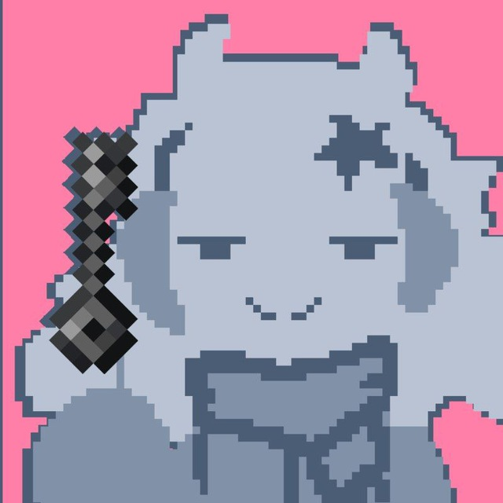

Feodaller
Автор · Карты · Ру МапДев
Привет! Сейчас я все также занимаюсь созданием карт и веду свой телеграмм канал. Я всегда стараюсь делать карты интересными и проработанными, возможно так они получают свою популярность. Узнаваемость пришла ко мне в основном после успешнейшей карты "Очень страшная карта", кстати она есть на этом сайте, это карта которую до сих пор с теплом вспоминает комьюнити. Если стало интересно, то ты можешь посмотреть в моем телеграмм канале больше про меня и мои творения! 💕
← Назад к авторам
 МапДев Вики
МапДев Вики